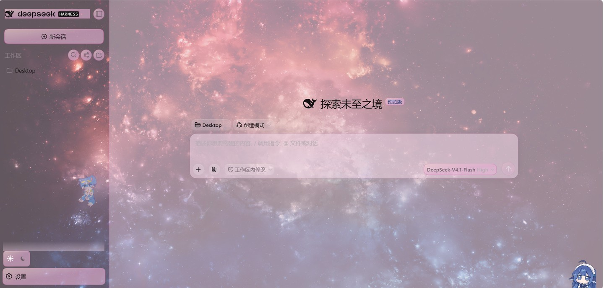
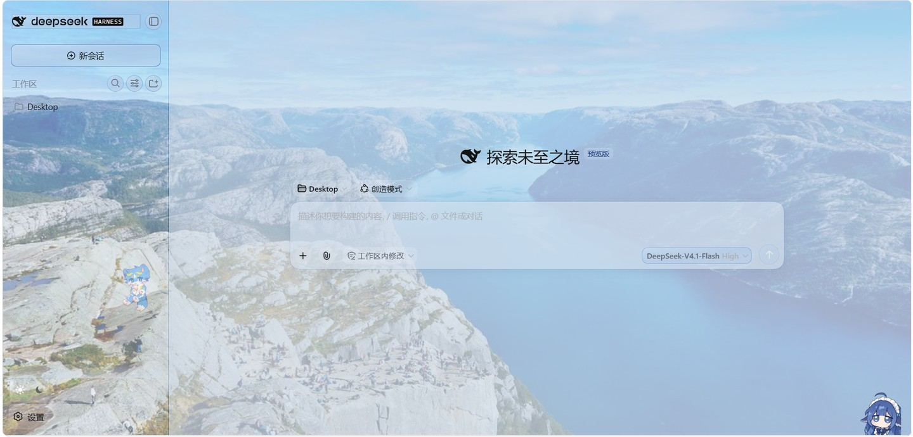

把界面变成
你自己的样子
An image skin for the DSH web UI — your own images, GIFs and looping video on every region,
draggable stickers on the chrome, and an interface that takes its colour from your wallpaper.
给 DSH 网页版换上你自己的图片、GIF 和循环视频；界面的颜色从壁纸里取。
不要账号、不上传、不联网 —— 所有东西都留在你这台机器上。

 MIT纯本机可完全撤销
MIT纯本机可完全撤销

实机截图：壁纸铺在磨砂面板后面，界面的颜色是从这张图里取的。图、色板、角标，全在本机。
它做什么Eight regions, two stickers, one hue — all yours.
按区域贴图
整窗口底图、中心列、侧栏、欢迎页、右面板、输入框 —— 各自独立配图、填充方式与开关。
动起来
窗口底图支持循环 mp4 / webm，任何区域都能用 GIF，一个滑块统管播放速率。
浅色 / 深色分开配
两套独立的图；切主题时壁纸跟着换，没单独配的区域回退到「通用图」。
角标贴图
侧栏与输入框上各一张自由漂浮的图 —— 拖动挪位置、拖角缩放，位置会记住。
面板透明度
一个滑块让 DSH 自己的面板透出背景 —— 而壁纸本身不会被压暗（刻意如此）。
界面跟着画面配色
按钮、输入框、弹窗、轨道不再是灰的：从壁纸取一个色相（视频也能取真帧），逐级对比度校验后染上去。
流畅，且能一直流畅
长对话、大 DOM 也不卡：过渡只走合成器能处理的属性，树太重时停掉文字颜色的活儿。
纯本机、可撤销
文件放在 $DSH_HOME/image-skin/。关掉插件，它加过的样式、角标、视频层全部消失。
配色：一个色相，长出整套界面Sample a picture, tint the skeleton.
取色器把画面收敛成一个色相，每个角色（细线 / 文字 / 面）都由它推出来并做对比度校验， 所以界面是和画面和声，不是打架。深浅档位无级可调，拖动时界面立刻跟着变。

同一个界面，换一张壁纸 —— 面板、细线、文字色全部从新图重算。
安装One package, three steps.
# 1. 从 npm 装 dsh plugin --profile web add dsh-image-skin # 2. 重启 web 宿主，让 profile 重新组装 dsh --profile web --no-open # 3. 浏览器硬刷新（Ctrl+F5）
仓库里带了个小工具帮你做第 1–2 步：node scripts/install.mjs --profile web（加 --dry-run 只打印它要跑的命令）。
settingsScope，
会让桌面端直接起不来。0.4.2 及以后都正常。如果安装器一直给你旧版本，请点名要版本：dsh plugin --profile web add dsh-image-skin@0.4.8 —— 在桌面端的插件安装框里也一样。
一点诚实的话维护者的自白
- 这是个学生业余项目。作者在课业缝里做它，回复和修复可能慢 —— 请多包涵。
- issue、点子和 PR 都是真心欢迎的，每一条都会看。
- 不许诺什么。没有账号体系、没有云、没有遥测；关掉插件等于什么都没发生。
- 一个曾经试过、现在没有的功能：让生图模型画一圈花纹边框（AI 纹样）。做实了、也公开过， 最后判断效果不好（花纹在小按钮上会变成色块打架），入口已撤。这一版只做取色与配色。